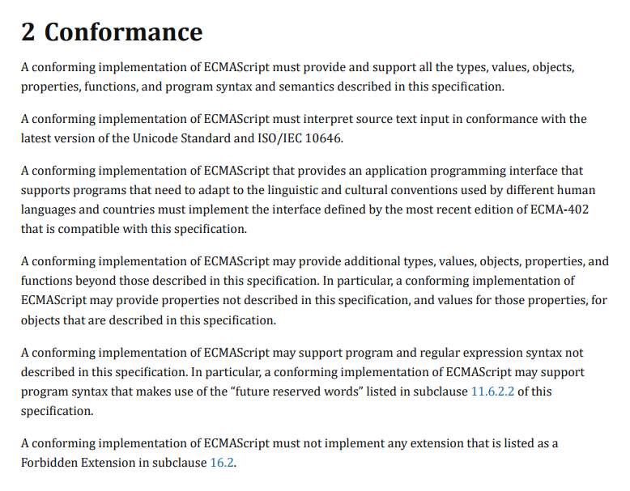

原文： What’s the difference between JavaScript and ECMAScript ?
原文作者：Michael Aranda

我曾试着在 google 上搜索“JavaScript 和 ECMAScript 的区别。”
结果，我只得到了一大堆模棱两可、看似矛盾的内容：
“ECMAScript 是一种标准。”
“JavaScript 是一种标准。”
“ECMAScript 是一种规范。”
“JavaScript 是 ECMAScript 标准的实现。”
“ECMAScript 是标准化的 JavaScript。”
“ECMAScript 是一种语言。”
“JavaScript 是 ECMAScript 的方言。”
“ECMAScript 就是 JavaScript。”
忍着别哭，我振作起来决定去做一件痛苦但有用的研究。
这篇文章代表了我当前对 JavaScript 和 ECMAScript 之间的区别的理解。本文适用于那些熟悉 JavaScript 但希望更清楚地了解JavaScript 与 ECMAScript、web浏览器、Babel等的关系的人。您将会学到脚本语言、JavaScript 引擎和 JavaScript 运行时。
所以加油吧！
JavaScript/ECMAScript 词汇表
以下是为了专注一致性和确定性而设计的一系列定义，这些定义主要是为了一致性和确定性而设计。这些定义并非百分百的完整。它们提供了一种更高级的方式去理解JavaScript 和 ECMAScript 之间的关联和关系。
废话少说，让我们开干吧。
Ecma 国际
一个专为技术制定标准的组织。

举一个“标准”的例子（尽管它不是由 Ecma 制定的），想想您曾经使用过的键盘。是不是大多数的字母都是同样的顺序、都有一个空格、一个输入键、箭头，还有一行数字在上方排列。这是因为键盘生产商是以 QWERTY 的编排规范为基准的。
ECMA-262
这是由 Ecma 国际发布的标准。它包含了一般用途的脚本语言规范。
ECMA-262 是一个类似于 QWERTY 的标准，但它不是键盘布局的规范，而是一个被称为 ECMAScript脚本语言的规范。
可以将ECMA-262看作ECMAScript的参考编号。

脚本语言
一种程序设计语言，专门用来处理现有的实体或系统。
对于编程语言成为脚本语言的一般概念，可以考虑“走”、“跑”和“跳”命令。这些行为需要一些东西去执行他们，可能是一个人、一只狗，或者电子游戏的角色。没有这些演员去表演这些命令，“走”、“跑”和“跳”是没有任何意义的。这组操作类似于一种侧重于操作外部实体的脚本语言。
ECMAScript
ECMAScript 是在 ECMA-262 中定义的用于创建通用脚本语言的规范。
同义词：ECMAScript 规范

ECMA-262 是这个标准的名字，它代表脚本语言规范 ECMAScript。
ECMAScript 提供了规则、详细和指引，一个脚本语言必须遵守这些才能被视为符合ECMAScript规范的。

JavaScript
一种符合 ECMAScript 规范的通用脚本语言。
JavaScript 是一种我喜欢用的咖啡味语言。 它是以 ECMAScript 为基本规范的。通过阅读 ECMAScript 规范，您可以学会如何创建一门脚本语言。阅读JavaScript 文档 您可以学会如何使用一门脚本语言。
当人们称 JavaScript 为 “ECMAScript 的方言”，他们的意思和谈论英语、法语或汉语方言时的意义相同。一个方言派生的词典和语法大多数来自它们的母语，但这些区别足够值得去区分。
JavaScript 大部分按照 ECMA-262 中描述的 ECMAScript 规范一样实现。但仍有少部分不同存在。Mozilla 在这里概述了 JavaScript 的非 ECMAScript 语言功能:
JavaScript 引擎
一个能理解并执行 JavaScript 代码的程序或者解释器。
同义词：JavaScript 解释器，JavaScript 实现工具
JavaScript 引擎通常出现在浏览器中，包括谷歌浏览器的 V8, 火狐的 SpiderMonkey， Edge 中的 Chakra。每个引擎就像其应用程序的语言模块，允许它支持 JavaScript 语言的某个子集。
JavaScript 引擎之于浏览器就像语言理解能力之于人。回顾刚刚的例子，“走”、“跑”和“跳”这些行为，JavaScript 引擎是能理解这些意义的实体的一部分。
这个类比有助于解释浏览器的一些事情：
浏览器性能差异
两人都会认出“跳”命令，但有一人反应更快，因为这个人比另外一人能更快地理解和处理这个命令。相似的，两个浏览器可以理解 JavaScript 代码，但其中一个运行的更快是因为它的 JavaScript 引擎是实现的效率更高。
浏览器支持差异
两个说同样语言的人之间也会存在不同。甚至在说英语的人当中，有一些人知道一些单词、表达和语法规则而有一些人不知道，反之亦然。浏览器也是同样的道理。即使浏览器的JavaScript 引擎都能理解 JavaScript，但一些浏览器比其他的能更好的理解这个语言。浏览器支持该语言的方式存在差异。
关于浏览器的支持，人们通常会讨论“ECMAScript 的兼容”而不“JavaScript 的兼容”，尽管是 JavaScript 引擎在解析和执行。好吧，JavaScript。这会有一点困惑，这里由一个说明。
如果您还记得，ECMAScript是脚本语言的规范。发布一个新的 ECMAScript 版本并不会意味着所有的已经出现的 JavaScript 引擎可以马上支持这些新特性。这将由负责 JavaScript 引擎的团队或者组织来更新 ECMAScript 规范，以及采用它的改变。
因此，开发者往往会问这样的问题，“这个浏览器支持什么样的 ECMAScript 版本？”或者“这个浏览器支持哪些 ECMAScript 特性？”他们是想知道谷歌、Mozilla、微软是否有时间按照最新的 ECMAScript 制定的新特性去分别的更新他们浏览器的 JavaScript 引擎，比如V8、SpiderMonkey 和 Chakra。
这个ECMAScript 兼容表是一个回答这些问题的好资源。
如果一个新的ECMAScript 版本诞生，JavaScript 引擎不会一次性集成整个更新。他们会递增的合并 ECMAScript 新特性，从Firefox的JavaScript变更日志中可以看到：
运行时
运行 JavaScript 代码并由 JavaScript 引擎解释的环境。运行时提供 JavaScript 可以操作和使用的宿主对象。
同义词： 宿主环境
JavaScript 运行时是在脚本语言定义提到的的“存在的实体或系统”。代码通过
代码通过JavaScript引擎，一旦被解析和理解，实体或系统就会执行解释的动作。狗在走，人在跑，电子游戏角色在跳（或者如上图一样在搞破坏）。
应用程序在运行时提供“宿主对象”使 其对 JavaScript 脚本可用。对于客户端，JavaScript 运行时就是 web 浏览器，在这里可以对 windows 和 HTML 文档等宿主对象进行操作。
您曾经使用过 window 或文档宿主对象吗？window 和文档对象确实不是 JavaScript 语言的核心部分。他们只是JavaScript 宿主环境浏览器所提供的 web APIs 和对象。对于服务端，JavaScript 运行时是 Node.js。服务器相关的宿主对象比如文件系统、进程和请求，它们都是由 Node.js 提供的。
有趣的是，不同的 JavaScript 运行时可以共享同样的 JavaScript 引擎。比如 V8 被两个完全不同的环境谷歌浏览器和 Node.js 所使用。
ECMAScript 6
它是 ECMA-262 第六个版本，非常大的改变和改进了 ECMAScript 规范。
同义词：ES6、 ES2015、 ECMAScript 2015
在这个 ECMAScript 版本中将名字 ES6 改变为 ES2015，因为在2015年 Ecma 国际决定每年都要发布一个新的 ECMAScript。因此，Ecma 国际也开始根据 ECMAScript 规范的发布年份来命名新版本。简言之，ES5 和 ES2015 是同一个东西的两个不同的名字。
Bable
将 ES6 转换成 ES5 的转译器。

开发者可以使用ES6 闪亮的特性，但他们的应用可能会涉及到跨浏览器的兼容。在写这篇文章的时候，Edge 和 IE 浏览器都还没有完全支持 ES6 规范的新特性。
有顾虑的开发者可以使用 Babel 去转换 ES6 代码为功能相同的 ES5 版本。所有的主流浏览器都支持 ES5，那样他们的代码就可以在没有任何问题下运行。
一段趣闻
我希望你发现的这些关于 JavaScript 和 ECMAScript 内容对你有用。在结束之前，
我想分享一个信息，让像我一样初出茅庐的web 开发者更清楚一些。
先有鸡还是先有蛋
有一段令人困惑的历史是 JavaScript 在1996年创造的。而它是在1997年提交到 Ecma 国际进行标准化，从而 ECMAScript 应运而生。同时，由于 JavaScript 符合 ECMAScript 规范，所以 JavaScript 是根据 ECMAScript 实现的一个例子。
这留给我们一个有趣的事实：ECMAScript 是基于 JavaScript，而 JavaScript 又是基于 ECMAScript。
我知道了。
这听起来完全像时间旅行比喻人们做自己的父母–有点矛盾，但想想有点有趣。
展望
我知道我在这里玩得很开心，但仍有大量的信息去消化。我要借此机会告别了。
请随时在下面留下任何问题、意见、建议或顾虑。
非常感谢您的阅读！